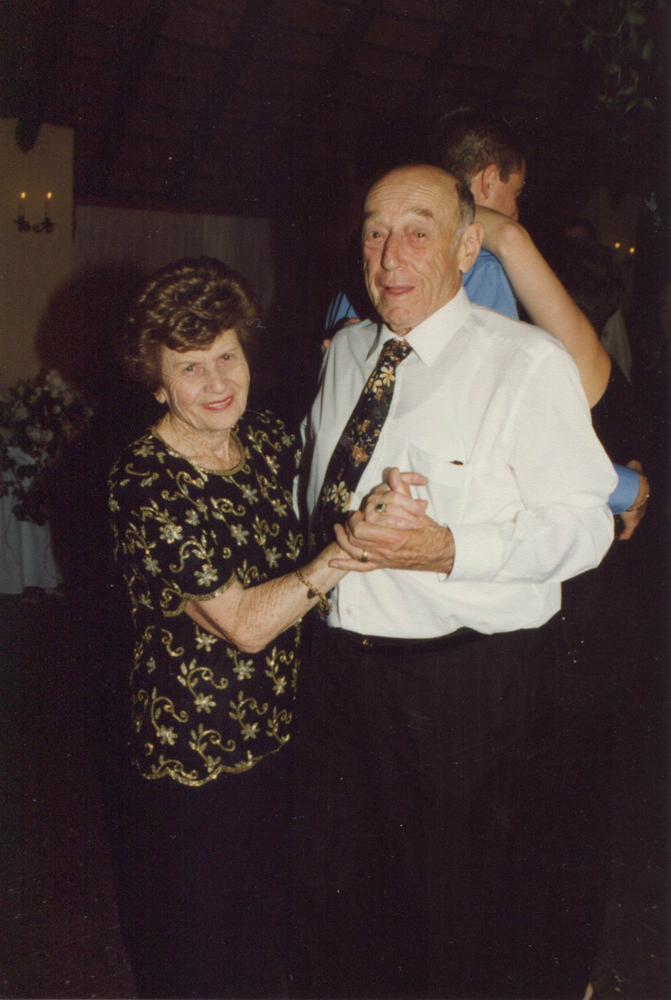

The Opalin story / A new home
Building a life
in southern Africa.
Arrival did not end the difficult years. The family accounts describe loss, work, care and the creation of a close household in Johannesburg.
Moshe’s death: a strong documentary candidate

The family portrait shows Moishe (Moshe) Milstein, remembered by Minnie and Ben as dying after an ulcer operation, about a year after Doba and the children arrived in South Africa.Moishe Milstein: family portraitMinnie Spitalnik - 1uncle ben interview - 1
The original certificate for Morris Millstein records death at Johannesburg Hospital on 5 September 1935, registration the following day, age forty-one, Poland-born, married and a vegetable hawker. His home address was 31 Bezuidenhout Street, Troyeville. The medical entry describes peptic-ulcer surgery followed by haemorrhage.Morris Millstein death certificate, 1935
Minnie and Ben recall an ulcer operation and death about a year after Doba and the children arrived. The certificate’s timing and medical details fit, and the address later matches Mina Milstein’s marriage. The identification with Moshe is strong, but the certificate does not name Doba or his parents. A linked estate or family death notice would close that gap.Morris Millstein death certificate, 1935Mina Milstein and Elias Spitalnik, 1937Minnie Spitalnik - 1uncle ben interview - 1Minnie – 1, 26:12–28:58; Ben – 1, 45:00–47:00
The Find a Grave memorial gives 6 September, but has no photograph or relatives. The civil record explicitly separates death on the fifth from registration on the sixth. Allegations or remembered doubts about the operation are not treated as findings of medical wrongdoing.Morris Millstein death certificate, 1935Morris Millstein memorial indexMinnie Spitalnik - 1
Doba kept the household together
The tapes describe Doba selling clothing and household provisions, obtaining stock on credit and declining an offer of orphanage assistance. Minnie says Doba later funded her passage, which she repaid while paying board and beginning dressmaking work. Troyeville, Mayfair and later Greenside/Emmarentia recur in the family’s geography. Street details and the exact order of moves still need checking.Minnie Spitalnik - 2uncle ben interview - 1uncle ben interview - 2Minnie – 2, 00:10–01:49, 05:07–07:35; Ben – 1, 07:56–09:04, 40:00–49:00
The recent family conversation remembers Masie leaving school at fourteen to help her brothers finish. The supplied text does not safely identify the individual speaker or verify the school-leaving date. It nevertheless preserves how the family remembers her contribution.Mark, Natalie and Luba: recent conversationMark Cohen’s family recollections
Arke: a name restored to the family story
Ben names the siblings in order: Arke/Aaron, Riva, himself and Philip. Minnie recalls the eldest son’s later care, a visit in Kensington and his death soon after Doba. Mark confirms Arke’s identity and recalls that younger relatives learned of him only much later.uncle ben interview - 1Minnie Spitalnik - 1Mark Cohen’s family recollectionsMark, Natalie and Luba: recent conversationBen – 1, 04:24–05:35; Minnie – 1, 29:05–32:36
The gravestone for Aron Milstein identifies his father as Moshe and gives 19 February 1977. Doba’s recorded death is 7 February: twelve days earlier. Approximate intervals of ten or eleven days in conversation should not replace the recorded dates.Aron Milstein gravestoneJohannesburg Chevrah Kadisha burial search
No personal institutional file or diagnosis has been established. Selwyn Segal is a family suggestion. Its official history places its original home in Kensington from 1956, which is geographically compatible with Minnie’s recollection but cannot account for care beginning in the 1930s. Trips described as going to Krugersdorp may have been a cover story, as Mark cautions; they do not establish the home’s location.Selwyn Segal institutional historyMark Cohen’s family recollectionsMark, Natalie and Luba: recent conversationMinnie Spitalnik - 1
The Slot stepfamily
Ben identifies Isaac Slot as his stepfather and remembers an unmarried son Nick joining the household. Mark remembers Paul, Nick and a sister, and believes they were stepchildren. Isaac’s gravestone establishes 26 July 1952, resolving the tapes’ debated death year. Bulawayo as his death place remains an oral lead.uncle ben interview - 2Talking of Opalin - 2Mark Cohen’s family recollectionsIsaac Slot gravestone
Annie Slot’s 1941 death notice names an Isaac Slot, estate agent, and children Hayme (reading provisional), Paul and Leslie, born 16 May 1923. Ethan’s tree calls Leslie “Nick”, a useful fit that still needs a linking record. It also shows Helman C. and Hymie with the same 1917–1981 dates, possibly duplicate entries. No unnamed sister has yet been securely identified.Annie Slot, born Camberg: death noticeRiva Gilinsky — Ethan Cohen’s family history
The original Gazette notice, now visually checked on page 104, gives Doba’s estate as 2783/77; Isaac’s is TAB MHG 5056/52. Both full packets remain outstanding. Enquiries were sent with Mark’s approval, and the archive records that they are awaiting replies. No record request was sent to Yahad.Doba Slot estate notice, 2783/77Doba’s estate: film-range leadIsaac Slot estate: TAB MHG 5056/52Mark Cohen’s family recollections
Minnie, Riva and the next generation
A strong 1937 marriage candidate names Mina Milstein and Elias Spitalnik, supporting Minnie’s Milstein maiden surname. Her gravestone gives Menucha daughter of Leib, died 2 August 1997. Mark now confirms George as her husband’s family-used name and supplies a photograph of the couple. The link between George and the candidate civil name Elias still needs corroboration.Mina Milstein and Elias Spitalnik, 1937Minnie Spitalnik gravestoneMinnie Spitalnik - 2Minnie and her husband George

Ethan’s history describes Riva and Max Gilinsky’s hospitality, Friday-night and festival meals, and Riva’s work in the Emmarentia synagogue’s Ladies Guild. He writes from his position as their great-grandson. His tree dates Max 1910–2000 and Riva 1919–2015; Max’s death on 3 June 2000 and Riva’s on 1 June 2015 are now corroborated by the burial register; see the Gilinsky branch.Riva Gilinsky — Ethan Cohen’s family history
Ben and Philip’s recordings describe engineering and steelwork. Candidate archive descriptions pair Benjamin and Philip in Milrich Engineering in the 1950s. Their case files have not been read; titles are not evidence of fault, merits or outcomes. Mark confirms that both brothers and their wives are now deceased, superseding the old tree’s “Living” labels.uncle ben interview - 1uncle ben interview - 2Milrich Engineering: candidate filesMark Cohen’s family recollections


